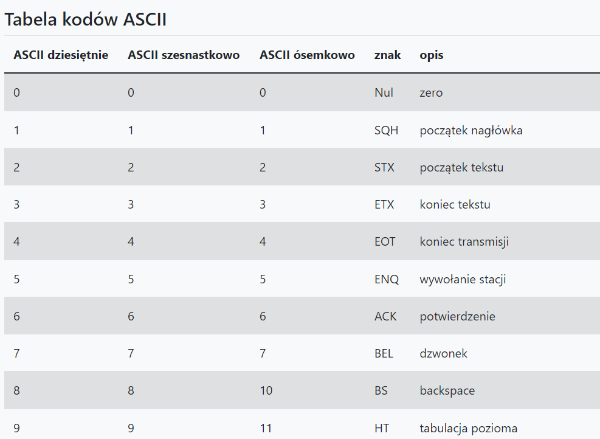

1. Co to jest programowanie i jego etapy
Programowanie - proces tworzenia programu komputerowego, który ma realizować określone zadania.
Etapy programowania
-układanie kodu
-testowanie programu
2. Wymienić i opisać reguły programowania
Reguły syntaktyczne -> reguły składni wyrażeń i funkcji użytych w programie
Reguły semantyczne -> semantyka języka programowania definiuje precyzyjnie znaczenie
poszczególnych symboli (instrukcje, operatory itp.) oraz ich funkcję w programie
3. Algorytm- definicja
Algorytm jest to pewien ciąg czynności, który prowadzi do rozwiązania danego problemu
w skończonej ilości kroków.
4. Cechy charakterystyczne algorytmów
- Poprawność - algorytm powinien zwracać poprawne wyniki.
- Jednoznaczność - algorytm powinien przy takim samym zbiorze danych wejściowych zwracać takie same wyniki.
- skończoność - dla każdego zbioru poprawnych danych wejściowych algorytm powinien zwracać wyniki w skończonej liczbie kroków
- efektywność - algorytm powinien prowadzić do rozwiązania problemu w jak najmniejszej liczbie kroków.
5. etapy konstruowania algorytmu
- Sformułowanie zadania.
- Określenie danych wejściowych.
- Określenie celu, czyli wyniku.
- Poszukiwanie metody rozwiązania, czyli algorytmu.
- Przedstawienie algorytmu w postaci: ...
- Analiza poprawności rozwiązania.
6. sposoby przedstawiania algorytmu wraz z opisem
- słowny opis
- schemat blokowy
- lista kroków
- za pomocą jednego z języków formalnych.
7. Specyfikacja problemu
Specyfikacja problemu to po prostu dokładny opis, zawierający wszystkie aspekty (parametry) problemu.
8. symbole stosowane w schematach blokowych

9. Reguły rysowania schematów blokowych
- Bloki muszą być połączone ze sobą
- Połączenia muszą być zaznaczone linią prostą
- Wszystkie operacje muszą mieścić się w blokach
10. Podziały algorytmów wraz z opisem
Liniowy — kolejne kroki w algorytmie są wykonywane w kolejności, w jakiej zosłały zapisane. Żaden krok nie może być pominięty ani powtórzony
Warunkowy — wykonanie zależy od spełnienia lub niespełnienia określonego warunku.
Z pętlą — grupa poleceń jest powtarzana wielokrotnie. Liczba powtórzeń może być z góry określona lub grupa poleceń jest powtarzana aż do spełnienia określonego warunku.
11. Opis pojęć (złożoność algorytmu, złożoność obliczeniowa, złożoność czasowa, złożoność pamięciowa)
Złożoność algorytmu - ilość zasobów komputerowych potrzebnych do działania algorytmu
Złożoności obliczeniowa - Podobnie jak złożoność czasowa jest miarą czasu działania algorytmu, tak złożoność pamięciowa jest miarą ilości wykorzystanej pamięci.
Złożoność czasowa- Określa ilość operacji podstawowych potrzebnych do wykonania
algorytmu o danej wielkości wejściowej.
Złożoność pamięciowa- Określa ilość przestrzeni pamięci wirtualnej potrzebnej do
wykonania algorytmu z określonym zestawem danych wejściowych.
12. Co to są kody ASCII (+ kawałek tabeli kody ascii)
siedmiobitowy system kodowania znaków, używany we współczesnych komputerach oraz sieciach komputerowych, a także innych urządzeniach wyposażonych w mikroprocesor.
